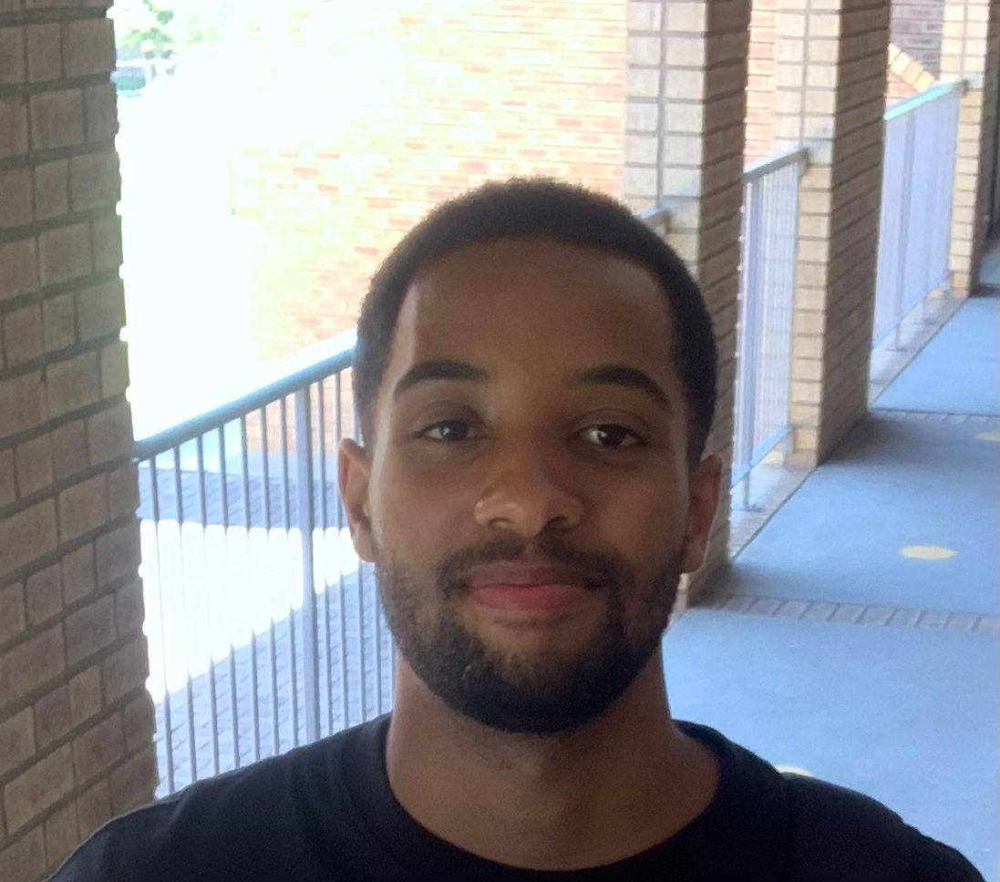
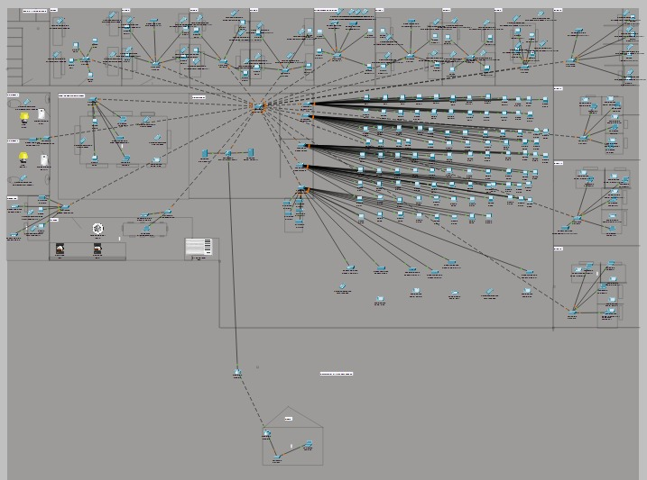
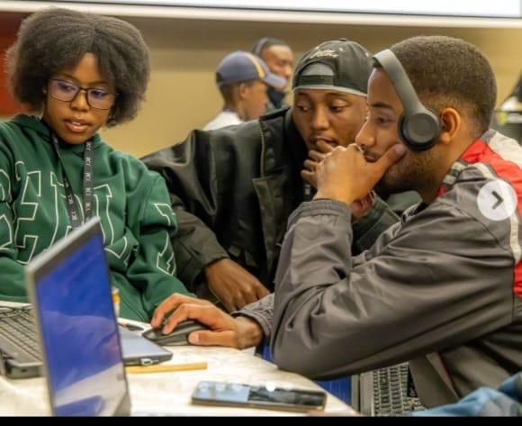
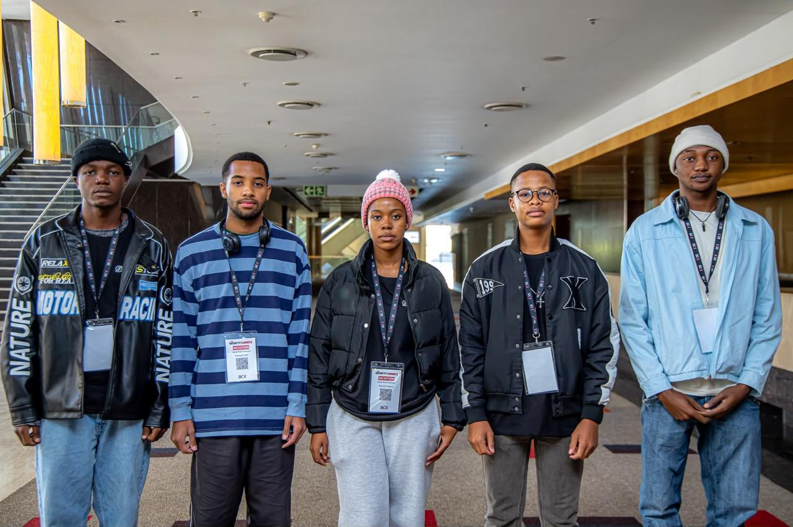

Hello, I'm
I am a final-year BSc Information Technology student at North-West University with a growing passion for Cybersecurity, Artificial Intelligence, and Cloud Computing. I enjoy solving technical challenges, learning emerging technologies, and building secure, scalable software solutions.
Enterprise Network Project
Geekulcha Hackathon
Security Summit
Industry Experience

Protecting Systems
Exploring Intelligence
Building the Future
Get to know me and my passion for technology.
Hello! I'm Kamogelo Seale, a final-year BSc Information Technology student at North-West University with a passion for Cybersecurity, Artificial Intelligence, and Cloud Computing.
Throughout my academic journey, I have actively pursued opportunities beyond the classroom to strengthen my technical and leadership skills. From leading an Enterprise Network Design project that achieved 95%, to gaining industry experience at Blue Networks & Infrastructure (BNI), and competing in national hackathons, I enjoy applying technology to solve real-world problems.
I am currently expanding my knowledge by building a Cloud-Based AI Phishing Detection System, combining Artificial Intelligence, Cybersecurity and Cloud Computing. My goal is to build secure, intelligent and scalable solutions while continuously learning and contributing to innovative teams.
Academic excellence, industry exposure, leadership and national hackathon experience.
Successfully led the design and implementation of a secure enterprise network using Cisco Packet Tracer. The project focused on network security, VLAN segmentation, routing, ACLs and scalability while achieving a final mark of 95%.
Led my team during the Geekulcha Hackathon hosted at UNISA where we designed an innovative software solution and achieved a Top 3 finish.
View NWU ArticleCompeted against some of South Africa's top university developers at the Security Summit Hackathon hosted at the Sandton Convention Centre, finishing in the Top 5 nationally.
Completed practical industry training focused on enterprise networking, Cisco technologies, Linux servers, cloud solutions, Agile methodologies and IT infrastructure management.
Served within the Student Campus Council under the SCC Secretary Portfolio, contributing to student leadership initiatives, planning events and strengthening teamwork and communication skills.
Currently developing a Cloud-Based AI Phishing Detection System using Python, Flask and Machine Learning while exploring cloud deployment through AWS and Render.
Practical industry exposure gained through professional work experience.
Completed practical industry training at Blue Networks & Infrastructure, where I gained hands-on exposure to enterprise networking, IT infrastructure, cybersecurity solutions, cloud technologies and professional software development practices.
Cisco IOS • Linux • Windows Server • VMware • SQL Server • MySQL • PostgreSQL • Agile
One of my proudest academic achievements.

As Project Lead, I designed and coordinated the implementation of a secure enterprise network using Cisco Packet Tracer. The solution incorporated Layer 3 switching, VLAN segmentation, Access Control Lists (ACLs), Zero Trust principles and enterprise networking best practices.
Competitive experiences that strengthened my technical and teamwork skills.

Led my team during the Geekulcha Hackathon hosted at UNISA. Our solution, HarvestHub Technologies, was recognised in an official North-West University news article after achieving a Top 3 finish.

Competed against top developers from across South Africa at the Security Summit Hackathon held at the Sandton Convention Centre, where our team achieved a Top 5 national finish.
Developing leadership through service and collaboration.
Served under the SCC Secretary Portfolio, contributing to student engagement, organisational initiatives and communication. This experience strengthened my leadership, teamwork and responsibility while representing student interests.
My goal is to begin my career in Cybersecurity while continuing to develop expertise in Artificial Intelligence and Cloud Computing. I aspire to build secure, intelligent and scalable systems that protect organisations and create meaningful technological solutions. I am committed to continuous learning and contributing to innovative teams that value curiosity, collaboration and technical excellence.
North-West University
Final-Year StudentTechnologies, tools and platforms I have developed through academic projects, industry experience and continuous self-learning.
The qualities that complement my technical skills and help me contribute effectively to projects, teams and continuous learning.
I enjoy breaking down complex technical challenges into practical, efficient and secure solutions.
I actively expand my knowledge through self-study, hackathons, industry experience and personal projects.
Experienced leading project teams and collaborating effectively through student leadership, hackathons and academic projects.
Comfortable presenting ideas, documenting projects and communicating technical concepts clearly to different audiences.
Quick to learn new technologies and able to adapt to changing project requirements and environments.
I take responsibility for my work, enjoy tackling challenges and continuously look for opportunities to improve.
Projects that demonstrate my technical skills, leadership and passion for solving real-world problems.
Led the design and implementation of a secure enterprise network for a simulated organisation using Cisco Packet Tracer. The project focused on scalability, security and network efficiency while following modern networking best practices.
Developing an AI-powered phishing detection platform that analyses URLs and email content using Machine Learning to identify phishing attacks. The system is being designed for cloud deployment and demonstrates the integration of Cybersecurity, Artificial Intelligence and Cloud Computing.
A full-stack vehicle service management system developed as a university group project. The application streamlines customer bookings, vehicle records, service management and workshop operations while providing an intuitive user experience.
Designed and developed a responsive portfolio website to showcase my education, projects, leadership experience, technical skills and career aspirations. The website is hosted online and serves as my digital CV.
I'm always open to discussing graduate opportunities, collaborations and innovative technology projects.